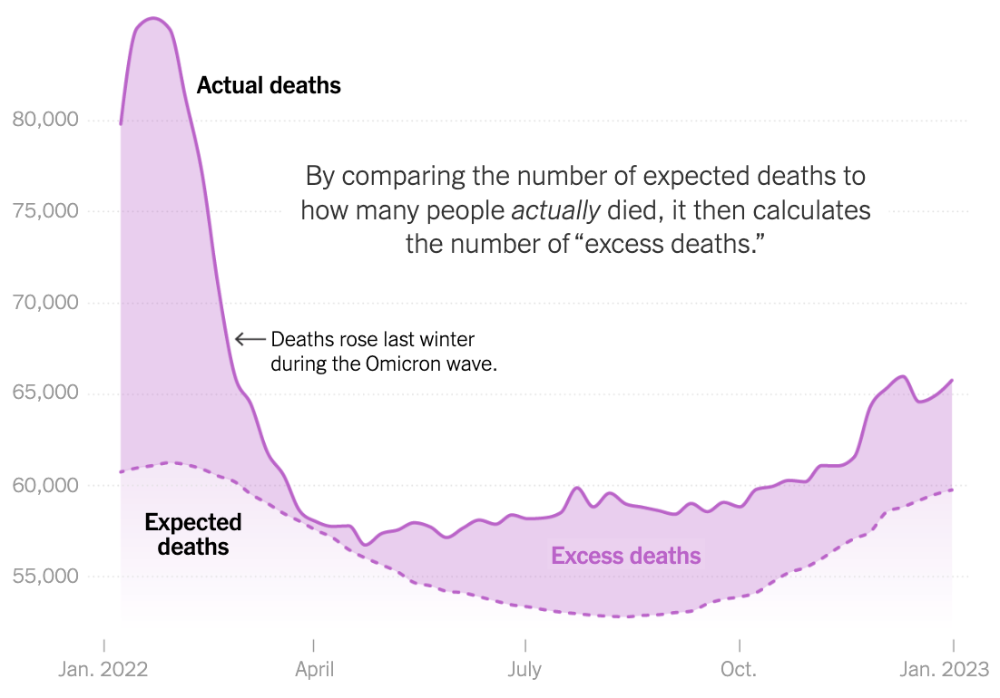
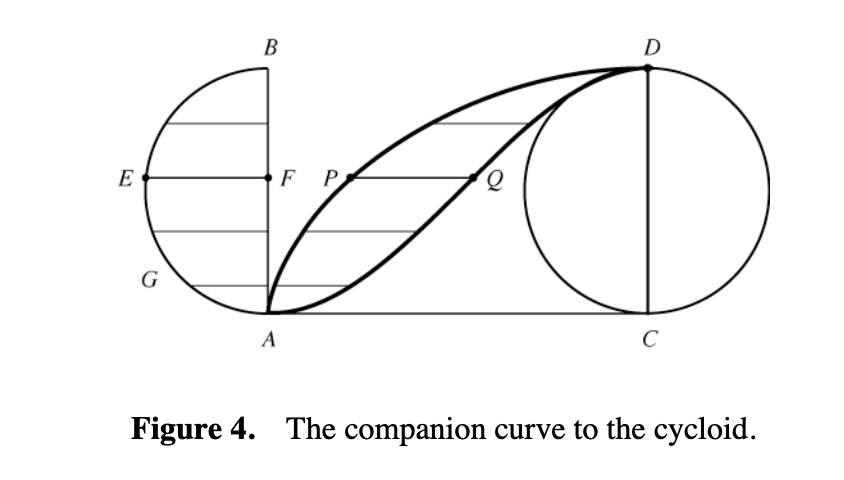
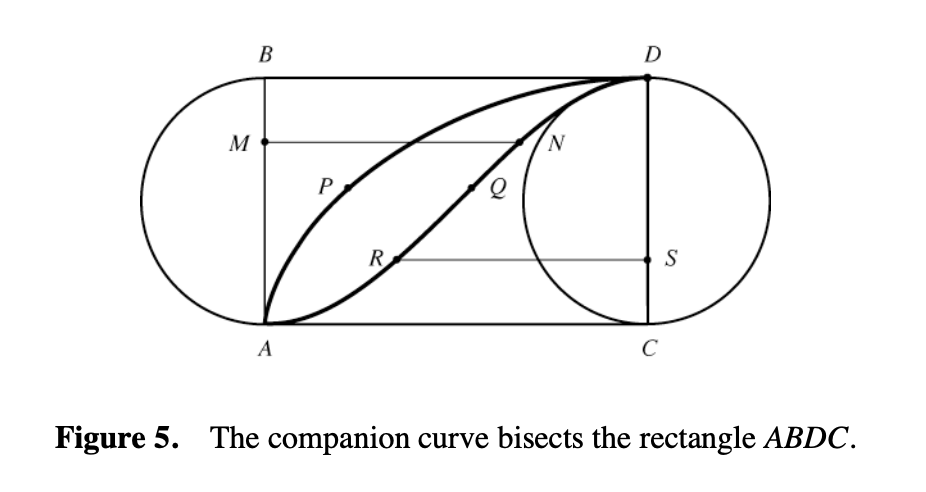

43 Area between two curves
#| output: false
#| echo: false
## Formatting options are included here; not in CalculusWithJulia.WeaveSupport
using QuizQuestions
nothing#| output: false
#| echo: false
fig_size=(800, 600)
nothing#| output: false
#| echo: false
import Logging
Logging.disable_logging(Logging.Info) # or e.g. Logging.Info
Logging.disable_logging(Logging.Warn)
nothing#| eval: false
#| echo: false
import SymPy
function Base.show(io::IO, ::MIME"text/html", x::T) where {T <: SymPy.SymbolicObject}
println(io, "<span class=\"math-left-align\" style=\"padding-left: 4px; width:0; float:left;\"> ")
println(io, "\\[")
println(io, sympy.latex(x))
println(io, "\\]")
println(io, "</span>")
end
#| output: false
#| echo: false
# ImageFile
## WeaveSupport from CalculusWithJulia package
## moved here to lighten up CwJ package
import Base64: base64encode
import Markdown
using Mustache
using Tables
# q and L
using LaTeXStrings
macro q_str(x)
"`$x`"
end
"""
Take an image file and encode it
## Examples
ImageFile("http://...", "caption")
ImageFile("/fullpath/to_file/", "caption")
ImageFile(:integrals, "figures/pic.png", "caption")
ImageFile(p, "caption") # p a Plot object
"""
mutable struct ImageFile
f
caption
alt
width
content
end
# 2 args f, caption
ImageFile(f,caption=""; alt="A Figure", width=nothing) = ImageFile(f, caption, alt, width)
# 3 args dir, f, caption
function ImageFile(dir::Symbol, f::AbstractString, caption;
alt="A Figure", width=nothing)
basedir = replace(dirname(@__DIR__), "/src" => "")
#fname = joinpath(basedir, "CwJ", string(dir), f)
fname = joinpath(basedir, string(dir), f)
ImageFile(fname, caption, alt, width)
end
# plot -> string for file
function ImageFile(f, caption, alt, width)
imgfile = tempname() * ".gif"
io = open(imgfile, "w")
show(io, "image/png", f)
close(io)
ImageFile(imgfile, caption, alt, width)
end
gif_to_img_tpl = Mustache.mt"""
<img src="data:image/gif;base64,{{{:data}}}" class="card-img-top" alt="{{{:alt}}}">
"""
function ImageFile(f::AbstractString, caption, alt, width)
fcontent = occursin(r"^http", f) ? read(download(f), String) : read(f, String)
data = base64encode(fcontent)
content = Mustache.render(gif_to_img_tpl, data=data, alt=alt)
ImageFile(f, caption, alt, width, content)
end
function Base.show(io::IO, m::MIME"text/html", x::ImageFile)
content = x.content
if content == nothing
data = (read(x.f, String))
content = gif_to_image(data=data, alt="figure")
end
caption = (Markdown.html ∘ Markdown.parse)(x.caption)
print(io, """<div class="d-flex justify-content-center">""")
print(io, " <figure>")
print(io, content)
print(io, " <figcaption>")
print(io, caption)
print(io, """
</figcaption>
</figure>
</div>
""")
end
import TextWrap
function Base.show(io::IO, m::MIME"text/plain", x::ImageFile)
caption = (TextWrap.wrap ∘ Markdown.plain ∘ Markdown.parse)(x.caption)
println(io, """
---------------------------------
|
| see online version for |
| image |
| |
--------------------------------
""")
println(io, caption)
return nothing
end
# hack to work around issue
# import Markdown
# import CalculusWithJulia
# function CalculusWithJulia.WeaveSupport.ImageFile(d::Symbol, f::AbstractString, caption; kwargs...)
# nm = joinpath("..", string(d), f)
# u = ""
# Markdown.parse(u)
# end
# Table
#| echo: false
#https://github.com/TheRoniOne/MDTable.jl/blob/master/src/write.jl
function MDTable(io::IO, df)
rows = Tables.rows(df)
sch = Tables.schema(rows)
names = Tables.columnnames(rows)
header = true
headers::String = ""
for i in 1:length(names)
if i != length(names)
headers = headers * "| $(names[i]) "
else
headers = headers * "| $(names[i]) " * "|\n"
end
end
print(io, headers)
println(io, "| --- " ^ length(names) * "|")
for row in rows
line::String = ""
Tables.eachcolumn(sch, row) do val, i, nm
print(io, "| ", chomp(string(val)))
end
println(io, "|")
end
end
Table(d) = Markdown.parse(sprint(io -> MDTable(io, d)))
table(d) = Table(d)
# HTMLoutput
struct HTMLoutput
x
centered::Bool
caption::String
HTMLoutput(x; centered::Bool=false, caption::String="") = new(x, centered, caption)
end
function Base.show(io::IO, ::MIME"text/html", x::HTMLoutput)
if !x.centered
txt = x.x
else
centered_content_tpl = """
<div class="d-flex justify-content-center">
<div class="card border-light mx-3 px-3 my-3 py-3" style="{{#:width}}width={{:width}}px{{/:width}}{{^:width}} max-width: 560px;{{/:width}}">
{{{:content}}}
<div class="card-footer text-muted">
{{{:caption}}}
</div>
</div>
</div>
"""
txt = Mustache.render(centered_content_tpl; content=x.x, caption=x.caption)
end
print(io, txt)
end
function Base.show(io::IO, m::MIME"text/plain", x::HTMLoutput)
caption = (TextWrap.wrap ∘ Markdown.plain ∘ Markdown.parse)(x.caption)
println(io, "Content available in online version")
println(io, caption)
return nothing
end
nothingThis section uses these add-on packages:
using CalculusWithJulia
using Plots
plotly()
using Roots
using QuadGK
using SymPyThe definite integral gives the “signed” area between the function \(f(x)\) and the \(x\)-axis over \([a,b]\). Conceptually, this is the area between two curves, \(f(x)\) and \(g(x)=0\). More generally, this integral:
\[ \int_a^b (f(x) - g(x)) dx \]
can be interpreted as the “signed” area between \(f(x)\) and \(g(x)\) over \([a,b]\). If on this interval \([a,b]\) it is true that \(f(x) \geq g(x)\), then this would just be the area, as seen in this figure. The rectangle in the figure has area: \((f(a)-g(a)) \cdot (b-a)\) which could be a term in a left Riemann sum of the integral of \(f(x) - g(x)\):
#| hold: true
#| echo: false
f1(x) = x^2
g1(x) = sqrt(x)
a,b = 1/4, 3/4
xs = range(a, stop=b, length=250)
ss = vcat(xs, reverse(xs))
ts = vcat(f1.(xs), g1.(reverse(xs)))
plot(f1, 0, 1, legend=false)
plot!(g1)
plot!(ss, ts, fill=(0, :red))
plot!(xs, f1.(xs), linewidth=5, color=:green)
plot!(xs, g1.(xs), linewidth=5, color=:green)
plot!(xs, f1.(xs), legend=false, linewidth=5, color=:blue)
plot!(xs, g1.(xs), linewidth=5, color=:blue)
u,v = .4, .5
plot!([u,v,v,u,u], [f1(u), f1(u), g1(u), g1(u), f1(u)], color=:black, linewidth=3)For the figure, we have \(f(x) = \sqrt{x}\), \(g(x)= x^2\) and \([a,b] = [1/4, 3/4]\). The shaded area is then found by:
\[ \int_{1/4}^{3/4} (x^{1/2} - x^2) dx = (\frac{x^{3/2}}{3/2} - \frac{x^3}{3})\big|_{1/4}^{3/4} = \frac{\sqrt{3}}{4} -\frac{7}{32}. \]
Examples
Find the area bounded by the line \(y=2x\) and the curve \(y=2 - x^2\).
We can plot to see the area in question:
f(x) = 2 - x^2
g(x) = 2x
plot(f, -3,3)
plot!(g)For this problem we need to identify \(a\) and \(b\). These are found numerically through:
h(x) = f(x) - g(x)
a,b = find_zeros(h, -3, 3)The answer then can be found numerically:
first(quadgk(h, a, b))Example
Find the integral between \(f(x) = \sin(x)\) and \(g(x)=\cos(x)\) over \([0,2\pi]\) where \(f(x) \geq g(x)\).
A plot shows the areas:
f(x) = sin(x)
g(x) = cos(x)
plot(f, 0, 2pi)
plot!(g)There is a single interval when \(f \geq g\) and this can be found algebraically using basic trigonometry, or numerically:
a, b = find_zeros(x -> f(x) - g(x), 0, 2pi) # pi/4, 5pi/4
quadgk(x -> f(x) - g(x), a, b)[1]Example
Find the area between \(x^n\) and \(x^{n+1}\) over \([0,1]\) for \(n=1,2,\dots\).
We have on this interval \(x^n \geq x^{n+1}\), so the integral can be found symbolically through:
@syms x::positive n::positive
ex = integrate(x^n - x^(n+1), (x, 0, 1))
together(ex)Based on this answer, what is the value of this
\[ \frac{1}{2\cdot 3} + \frac{1}{3\cdot 4} + \frac{1}{4\cdot 5} + \cdots? \]
This should be no surprise, given how the areas computed carve up the area under the line \(y=x^1\) over \([0,1]\), so the answer should be \(1/2\).
p = plot(x, 0, 1, legend=false)
[plot!(p, x^n, 0, 1) for n in 2:20]
pWe can check using the summation function of SymPy which is similar in usage to integrate:
summation(1/(n+1)/(n+2), (n, 1, oo))Example
Verify Archimedes’ finding that the area of the parabolic segment is \(4/3\)rds that of the triangle joining \(a\), \((a+b)/2\) and \(b\).
#| hold: true
#| echo: false
f(x) = 2 - x^2
a,b = -1, 1/2
c = (a + b)/2
xs = range(-sqrt(2), stop=sqrt(2), length=50)
rxs = range(a, stop=b, length=50)
rys = map(f, rxs)
plot(f, a, b, legend=false, linewidth=3)
xs = [a,c,b,a]
plot!(xs, f.(xs), linewidth=3)For concreteness, let \(f(x) = 2-x^2\) and \([a,b] = [-1, 1/2]\), as in the figure. Then the area of the triangle can be computed through:
f(x) = 2 - x^2
a, b = -1, 1/2
𝐜 = (a + b)/2
sac, sab, scb = secant(f, a, 𝐜), secant(f, a, b), secant(f, 𝐜, b)
f1(x) = min(sac(x), scb(x))
f2(x) = sab(x)
A1 = quadgk(x -> f1(x) - f2(x), a, b)[1]As we needed three secant lines, we used the secant function from CalculusWithJulia to create functions representing each. Once that was done, we used the min function to facilitate integrating over the top bounding curve, alternatively, we could break the integral over \([a,c]\) and \([c,b]\).
The area of the parabolic segment is more straightforward.
A2 = quadgk(x -> f(x) - f2(x), a, b)[1]Finally, if Archimedes was right, this relationship should bring about \(0\) (or something within round-off error):
A1 * 4/3 - A2Example
Find the area bounded by \(y=x^4\) and \(y=e^x\) when \(x^4 \geq e^x\) and \(x > 0\).
A graph over \([0,10]\) shows clearly the largest zero, for afterwards the exponential dominates the power.
h1(x) = x^4
h2(x) = exp(x)
plot(h1, 0, 10)
plot!(h2)There must be another zero, though it is hard to see from the graph over \([0,10]\), as \(0^4=0\) and \(e^0=1\), so the polynomial must cross below the exponential to the left of \(5\). (Otherwise, plotting over \([0,2]\) will clearly reveal the other zero.) We now find these intersection points numerically and then integrate:
#| hold: true
a,b = find_zeros(x -> h1(x) - h2(x), 0, 10)
quadgk(x -> h1(x) - h2(x), a, b)[1]Examples
The area between \(y=\sin(x)\) and \(y=m\cdot x\) between \(0\) and the first positive intersection depends on \(m\) (where \(0 \leq m \leq 1\). The extremes are when \(m=0\), the area is \(2\) and when \(m=1\) (the line is tangent at \(x=0\)), the area is \(0\). What is it for other values of \(m\)? The picture for \(m=1/2\) is:
m = 1/2
plot(sin, 0, pi)
plot!(x -> m*x)For a given \(m\), the area is found after computing \(b\), the intersection point. We express this as a function of \(m\) for later reuse:
intersection_point(m) = maximum(find_zeros(x -> sin(x) - m*x, 0, pi))
a1 = 0
b1 = intersection_point(m)
quadgk(x -> sin(x) - m*x, a1, b1)[1]In general, the area then as a function of m is found by substituting intersection_point(m) for b:
area(m) = quadgk(x -> sin(x) - m*x, 0, intersection_point(m))[1]A plot shows the relationship:
plot(area, 0, 1)While here, let’s also answer the question of which \(m\) gives an area of \(1\), or one-half the total? This can be done as follows:
find_zero(m -> area(m) - 1, (0, 1))(Which is a nice combination of using find_zeros, quadgk and find_zero to answer a problem.)
Example
In an early 2023 article appearing in the New York Times a discussion on excess deaths was presented. Figure 43.1 shows two curves from which the number of excess deaths can be computed.

Consider the curve marked Actual deaths. The number of deaths per year is the sum over each day of the number of deaths per each day. Approximating this number with a curve and setting 1 day equal to 1 unit, the number of deaths is basically \(\int_0^{365} d(t) dt\). This curve is usually, say, \(u(t)\), so the expected number of deaths would be \(\int_0^{365} u(t) dt\). The difference, \(\int_0^{365} (d(t) - u(t))dt\) is interpreted as the number of excess deaths. This methodology has been used to estimate the true number of deaths attributable to the COVID-19 pandemic.
Example
Find the area bounded by the \(x\) axis, the line \(x-1\) and the function \(\log(x+1)\).
A plot shows us the basic area:
j1(x) = log(x+1)
j2(x) = x - 1
plot(j1, 0, 3)
plot!(j2)
plot!(zero)The value for “\(b\)” is found from the intersection point of \(\log(x+1)\) and \(x-1\), which is near \(2\):
ja = 0
jb = find_zero(x -> j1(x) - j2(x), 2)We see that the lower part of the area has a condition: if \(x < 1\) then use \(0\), otherwise use \(g(x)\). We can handle this many different ways:
- break the integral into two pieces and add:
quadgk(x -> j1(x) - zero(x), ja, 1)[1] + quadgk(x -> j1(x) - j2(x), 1, jb)[1]- make a new function for the bottom bound:
j3(x) = x < 1 ? 0.0 : j2(x)
quadgk(x -> j1(x) - j3(x), ja, jb)[1]- Turn the picture on its side and integrate in the \(y\) variable. To do this, we need to solve for inverse functions:
#| hold: true
a1=j1(ja)
b1=j1(jb)
f1(y)=y+1 # y=x-1, so x=y+1
g1(y)=exp(y)-1 # y=log(x+1) so e^y = x + 1, x = e^y - 1
quadgk(y -> f1(y) - g1(y), a1, b1)[1]When doing problems by hand this latter style can often reduce the complications, but when approaching the task numerically, the first two styles are generally easier, though computationally more expensive.
Example
Consider two overlapping circles, one with smaller radius. How much area is in the larger circle that is not in the smaller? The question came up on the Julia discourse discussion board. A solution, modified from an answer of @rocco_sprmnt21, follows.
Without losing too-much generality, we can consider the smaller circle to have radius \(a\), the larger circle to have radius \(b\) and centered at \((0,c)\). We assume some overlap – \(a \ge c-b\), but not too much – \(c-b \ge 0\) or \(0 \le c-b \le a\).
@syms x::real y::real a::positive b::positive c::positive
c₁ = x^2 + y^2 - a^2
c₂ = x^2 + (y-c)^2 - b^2
y₀ = first(solve(c₁ ~ c₂ , y))
x₀ = sqrt(a - y₀^2) # point of intersectionPlotting with \(a=1, b=3/2, c=2\) we have:
let 𝑎 = 1, 𝑏=3/2, 𝑐=2
@assert 0 ≤ 𝑐 - 𝑏 ≤ 𝑎
y = N(y₀(a => 𝑎, b => 𝑏, c => 𝑐))
x = sqrt(𝑎^2 - y^2)
p = plot(; legend=false, aspect_ratio=:equal)
plot!(x -> 𝑐 + sqrt(𝑏^2 - x^2), -𝑏, 𝑏; color=:black)
plot!(x -> 𝑐 - sqrt(𝑏^2 - x^2), -𝑏, -x; color=:black)
plot!(x -> 𝑐 - sqrt(𝑏^2 - x^2), x, 𝑏; color=:black)
plot!(x -> sqrt(𝑎^2 - x^2), -x, x; color=:black)
plot!(x -> sqrt(𝑎^2 - x^2), -𝑎, -x; color=:blue)
plot!(x -> sqrt(𝑎^2 - x^2), x, 𝑎; color=:blue)
plot!(x -> -sqrt(𝑎^2 - x^2), -𝑎, 𝑎; color=:blue)
scatter!([-x, x], [y, y])
plot!([0, 𝑏], [𝑐, 𝑐]; linestyle=:dash)
annotate!([(0, 𝑐, text("(0, c)", 8, :left)),
(𝑏, 𝑐, text("(b, c)", 8, :left)),
(x, y, text("(x₀, y₀)", 8, :left))])
plot!([0, 0], [𝑎, 𝑐 + 𝑏]; color=:green)
plot!([x, x], [y, 𝑐 + sqrt(𝑏^2 - x^2)]; color=:green)
p
endWith this orientation, we can see by symmetry that the area is twice the integral from \([0,x_0]\) and from \([x_0, b]\) provided \(0 \le c- b \le a\):
a1 = integrate(c + sqrt(b^2 - x^2) - (sqrt(a^2 - x^2)), (x, 0, x₀))
a2 = integrate(c + sqrt(b^2 - x^2) - (c - sqrt(b^2 - x^2)), (x, x₀, b))
A = 2(a1 + a2)And for the \(a=1, b=3/2, c=2\):
A(a => 1, b => 3//2, c => 2)As a check, when the two circles just touch, or \(a = c-b\), we should get the same as the area of a circle with radius \(b\) or \(b^2 \cdot \pi\):
A(c=>3, a=>1, b=>2)Integrating in different directions
The last example suggested integrating in the \(y\) variable. This could have more explanation.
It has been noted that different symmetries can aid in computing integrals through their interpretation as areas. For example, if \(f(x)\) is odd, then \(\int_{-b}^b f(x)dx=0\) and if \(f(x)\) is even, \(\int_{-b}^b f(x) dx = 2\int_0^b f(x) dx\).
Another symmetry of the \(x-y\) plane is the reflection through the line \(y=x\). This has the effect of taking the graph of \(f(x)\) to the graph of \(f^{-1}(x)\) and vice versa. Here is an example with \(f(x) = x^3\) over \([-1,1]\).
#| hold: true
f(x) = x^3
xs = range(-1, stop=1, length=50)
ys = f.(xs)
plot(ys, xs)By switching the order of the xs and ys we “flip” the graph through the line \(x=y\).
We can use this symmetry to our advantage. Suppose instead of being given an equation \(y=f(x)\), we are given it in “inverse” style: \(x = f(y)\), for example suppose we have \(x = y^3\). We can plot this as above via:
#| hold: true
ys = range(-1, stop=1, length=50)
xs = [y^3 for y in ys]
plot(xs, ys)Suppose we wanted the area in the first quadrant between this graph, the \(y\) axis and the line \(y=1\). What to do? With the problem “flipped” through the \(y=x\) line, this would just be \(\int_0^1 x^3dx\). Rather than mentally flipping the picture to integrate, instead we can just integrate in the \(y\) variable. That is, the area is \(\int_0^1 y^3 dy\). The mental picture for Riemann sums would be have the approximating rectangles laying flat and as a function of \(y\), are given a length of \(y^3\) and height of “\(dy\)”.
#| hold: true
#| echo: false
f(x) = x^(1/3)
f⁻¹(x) = x^3
plot(f, 0, 1, label="f", linewidth=5, color=:blue, aspect_ratio=:equal)
plot!([0,1,1],[0,0,1], linewidth=1, linestyle=:dash, label="")
x₀ = 2/3
Δ = 1/16
col = RGBA(0,0,1,0.25)
function box(x,y,Δₓ, Δ, color=col)
plot!([x,x+Δₓ, x+Δₓ, x, x], [y,y,y+Δ,y+Δ,y], color=:black, label="")
plot!(x:Δₓ:(x+Δₓ), u->y, fillto = u->y+Δ, color=col, label="")
end
box(x₀, 0, Δ, f(x₀), col)
box(x₀+Δ, 0, Δ, f(x₀+Δ), col)
box(x₀+2Δ, 0, Δ, f(x₀+2Δ), col)
colᵣ = RGBA(1,0,0,0.25)
box(f⁻¹(x₀-0Δ), x₀-1Δ, 1 - f⁻¹(x₀-0Δ), Δ, colᵣ)
box(f⁻¹(x₀-1Δ), x₀-2Δ, 1 - f⁻¹(x₀-1Δ), Δ, colᵣ)
box(f⁻¹(x₀-2Δ), x₀-3Δ, 1 - f⁻¹(x₀-2Δ), Δ, colᵣ)The figure above suggests that the area under \(f(x)\) over \([a,b]\) could be represented as the area between the curves \(f^{-1}(y)\) and \(y=b\) from \([f(a), f(b)]\).
For a less trivial problem, consider the area between \(x = y^2\) and \(x = 2-y\) in the first quadrant.
#| hold: true
ys = range(0, stop=2, length=50)
xs = [y^2 for y in ys]
plot(xs, ys)
xs = [2-y for y in ys]
plot!(xs, ys)
plot!(zero)We see the bounded area could be described in the “\(x\)” variable in terms of two integrals, but in the \(y\) variable in terms of the difference of two functions with the limits of integration running from \(y=0\) to \(y=1\). So, this area may be found as follows:
#| hold: true
f(y) = 2-y
g(y) = y^2
a, b = 0, 1
quadgk(y -> f(y) - g(y), a, b)[1]43.1 Questions
Question
Find the area enclosed by the curves \(y=2-x^2\) and \(y=x^2 - 3\).
#| hold: true
#| echo: false
f(x) = 2 - x^2
g(x) = x^2 - 3
a,b = find_zeros(x -> f(x) - g(x), -10, 10)
val, _ = quadgk(x -> f(x) - g(x), a, b)
numericq(val)Question
Find the area between \(f(x) = \cos(x)\), \(g(x) = x\) and the \(y\) axis.
#| hold: true
#| echo: false
f(x) = cos(x)
g(x) = x
a = 0
b = find_zero(x -> f(x) - g(x), 1)
val, _ = quadgk(x -> f(x) - g(x), a, b)
numericq(val)Question
Find the area between the line \(y=1/2(x+1)\) and half circle \(y=\sqrt{1 - x^2}\).
#| hold: true
#| echo: false
f(x) = sqrt(1 - x^2)
g(x) = 1/2 * (x + 1)
a,b = find_zeros(x -> f(x) - g(x), -1, 1)
val, _ = quadgk(x -> f(x) - g(x), a, b)
numericq(val)Question
Find the area in the first quadrant between the lines \(y=x\), \(y=1\), and the curve \(y=x^2 / 4\).
#| hold: true
#| echo: false
f(x) = x
g(x) = 1.0
h(x) = min(f(x), g(x))
j(x) = x^2 / 4
a,b = find_zeros(x -> h(x) - j(x), 0, 3)
val, _ = quadgk(x -> h(x) - j(x), a, b)
numericq(val)Question
Find the area between \(y=x^2\) and \(y=-x^4\) for \(\lvert x \rvert \leq 1\).
#| hold: true
#| echo: false
f(x) = x^2
g(x) = -x^4
a,b = -1, 1
val, _ = quadgk(x -> f(x) - g(x), a, b)
numericq(val)Question
Let f(x) = 1/(sqrt(pi)*gamma(1/2)) * (1 + x^2)^(-1) and g(x) = 1/sqrt(2*pi) * exp(-x^2/2). These graphs intersect in two points. Find the area bounded by them.
#| hold: true
#| echo: false
import SpecialFunctions: gamma
f(x) = 1/(sqrt(pi)*gamma(1/2)) * (1 + x^2)^(-1)
g(x) = 1/sqrt(2*pi) * exp(-x^2/2)
a,b = find_zeros(x -> g(x) - f(x), -3, 3)
val, _ = quadgk(x -> g(x) - f(x), a, b)
numericq(val)(Where gamma(1/2) is a call to the gamma function.)
Question
Find the area in the first quadrant bounded by the graph of \(x = (y-1)^2\), \(x=3-y\) and \(x=2\sqrt{y}\). (Hint: integrate in the \(y\) variable.)
#| hold: true
#| echo: false
f(y) = (y-1)^2
g(y) = 3 - y
h(y) = 2sqrt(y)
f1(y) = max(f(y), zero(y))
g1(y) = min(g(y), h(y))
a, b = find_zeros(y -> g1(y) - f1(y), [0,2])
val, _ = quadgk(y -> g1(y) - f1(y), a, b)
numericq(val)Question
Find the total area bounded by the lines \(x=0\), \(x=2\) and the curves \(y=x^2\) and \(y=x\). This would be \(\int_a^b \lvert f(x) - g(x) \rvert dx\).
#| hold: true
#| echo: false
f(x) = x^2
g(x) = x
a, b = 0, 2
val, _ = quadgk(x -> abs(f(x) - g(x)), a, b)
numericq(val)Question
Look at the sculpture Le Tamanoir by Calder. A large scale work. How much does it weigh? Approximately?
Let’s try to answer that with an educated guess. The right most figure looks to be about 1/5th the total amount. So if we estimate that piece and multiply by 5 we get a good guess. That part looks like an area of metal bounded by two quadratic polynomials. If we compute that area in square inches, then multiply by an assumed thickness of one inch, we have the cubic volume. The density of galvanized steel is 7850 kg/\(m^3\) which we convert into pounds/in\(^3\) via:
7850 * 2.2 * (1/39.3)^3The two parabolas, after rotating, might look like the following (with \(x\) in inches):
\[ f(x) = x^2/70, \quad g(x) = 35 + x^2/140 \]
Put this altogether to give an estimated weight in pounds.
#| hold: true
#| echo: false
f(x) = x^2/70
g(x) = 35 + x^2/140
a,b = find_zeros(x -> f(x) - g(x), -100, 100)
ar, _ = quadgk(x -> abs(f(x) - g(x)), a, b)
val = 5 * ar * 7850 * 2.2 * (1/39.3)^3
numericq(val)Is the guess that the entire sculpture is more than two tons?
#| hold: true
#| echo: false
choices=["Less than two tons", "More than two tons"]
answ = 2
radioq(choices, answ, keep_order=true)We used area to estimate weight in this example, but Galileo used weight to estimate area. It is mentioned by Martin that in order to estimate the area enclosed by one arch of a cycloid, Galileo cut the arch from some material and compared the weight to the weight of the generating circle. He concluded the area is close to \(3\) times that of the circle, a conjecture proved by Roberval in 1634.
Question
Formulas from the business world say that revenue is the integral of marginal revenue or the additional money from selling 1 more unit. (This is basically the derivative of profit). Cost is the integral of marginal cost, or the cost to produce 1 more. Suppose we have
\[ \text{mr}(x) = 2 + \frac{e^{-x/10}}{1 + e^{-x/10}}, \quad \text{mc}(x) = 1 + \frac{1}{2} \cdot \frac{e^{-x/5}}{1 + e^{-x/5}}. \]
Find the profit to produce 100 units: \(P = \int_0^{100} (\text{mr}(x) - \text{mc}(x)) dx\).
#| hold: true
#| echo: false
mr(x) = 2 + exp((-x/10)) / (1 + exp(-x/10))
mc(x) = 1 + (1/2) * exp(-x/5) / (1 + exp(-x/5))
a, b = 0, 100
val, _ = quadgk(x -> mr(x) - mc(x), 0, 100)
numericq(val)Question
Can SymPy do what Archimedes did?
Consider the following code which sets up the area of an inscribed triangle, A1, and the area of a parabolic segment, A2 for a general parabola:
#| hold: true
@syms x::real A::real B::real C::real a::real b::real
c = (a + b) / 2
f(x) = A*x^2 + B*x + C
Secant(f, a, b) = f(a) + (f(b)-f(a))/(b-a) * (x - a)
A1 = integrate(Secant(f, a, c) - Secant(f,a,b), (x,a,c)) + integrate(Secant(f,c,b)-Secant(f,a,b), (x, c, b))
A2 = integrate(f(x) - Secant(f,a,b), (x, a, b))
out = 4//3 * A1 - A2Does SymPy get the correct output, \(0\), after calling simplify?
#| hold: true
#| echo: false
yesnoq(true)Question
In Martin a fascinating history of the cycloid can be read.
#| hold: true
#| echo: false
imgfile="figures/cycloid-companion-curve.png"
caption = """
Figure from Martin showing the companion curve to the cycloid. As the generating circle rolls, from ``A`` to ``C``, the original point of contact, ``D``, traces out an arch of the cycloid. The companion curve is that found by congruent line segments. In the figure, when ``D`` was at point ``P`` the line segment ``PQ`` is congruent to ``EF`` (on the original position of the generating circle).
"""
# ImageFile(:integrals, imgfile, caption)
nothing
A to C, the original point of contact, D, traces out an arch of the cycloid. The companion curve is that found by congruent line segments. In the figure, when D was at point P the line segment PQ is congruent to EF (on the original position of the generating circle).In particular, it can be read that Roberval proved that the area between the cycloid and its companion curve is half the area of the generating circle. Roberval didn’t know integration, so finding the area between two curves required other tricks. One is called “Cavalieri’s principle.” From the figure above, which of the following would you guess this principle to be:
#| hold: true
#| echo: false
choices = ["""
If two regions bounded by parallel lines are such that any parallel between them cuts each region in segments of equal length, then the regions have equal area.
""",
"""
The area of the cycloid is nearly the area of a semi-ellipse with known values, so one can approximate the area of the cycloid with formula for the area of an ellipse
"""]
radioq(choices, 1)Suppose the generating circle has radius \(1\), so the area shown is \(\pi/2\). The companion curve is then \(1-\cos(\theta)\) (a fact not used by Roberval). The area under this curve is then
#| hold: true
@syms theta
integrate(1 - cos(theta), (theta, 0, SymPy.PI))That means the area under one-half arch of the cycloid is
#| hold: true
#| echo: false
choices = ["``\\pi``",
"``(3/2)\\cdot \\pi``",
"``2\\pi``"
]
radioq(choices, 2, keep_order=true)Doubling the answer above gives a value that Galileo had struggled with for many years.
#| hold: true
#| echo: false
imgfile="figures/companion-curve-bisects-rectangle.png"
caption = """
Roberval, avoiding a trigonometric integral, instead used symmetry to show that the area under the companion curve was half the area of the rectangle, which in this figure is `2pi`.
"""
# ImageFile(:integrals, imgfile, caption)
nothing